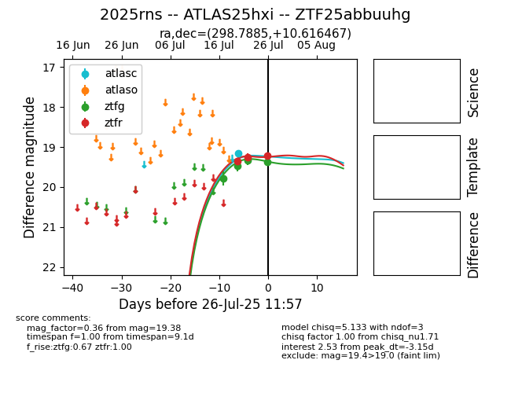

Target 2025rns at 2025-07-26 11:57, see:
FINK: fink-portal.org/2025rns
Lasair: lasair-ztf.lsst.ac.uk/objects/2025rns
ALeRCE: alerce.online/object/2025rns
TNS: wis-tns.org/object/2025rns
YSE: ziggy.ucolick.org/yse/transient_detail/2025rns
alt names
ZTF25abbuuhg (ztf,fink)
2025rns (tns,yse)
ATLAS25hxi (atlas)
coordinates:
equatorial (ra, dec) = (298.7885,+10.61647)
galactic (l, b) = (49.8214,-8.97857)
photometry
last atlasc=19.16, ztfg=19.38, ztfr=19.22
1 atlasc, 4 ztfg, 3 ztfr detections
